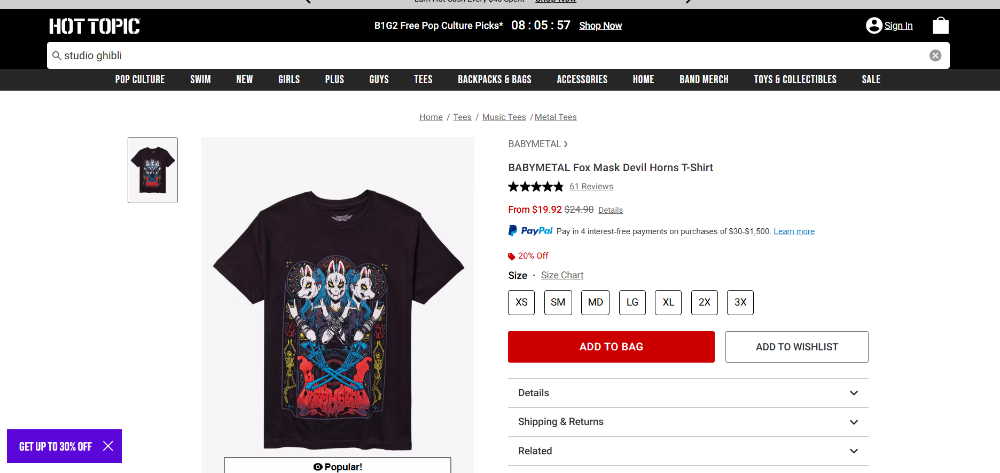
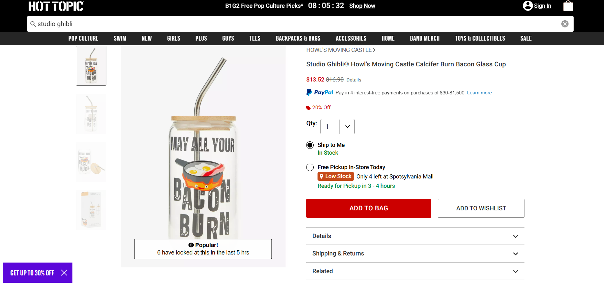
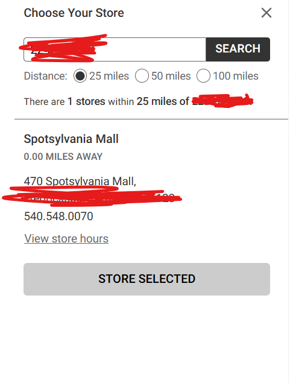
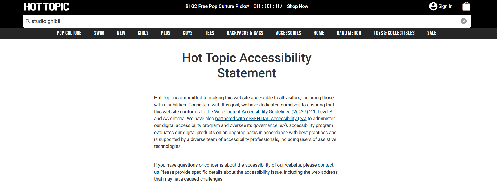
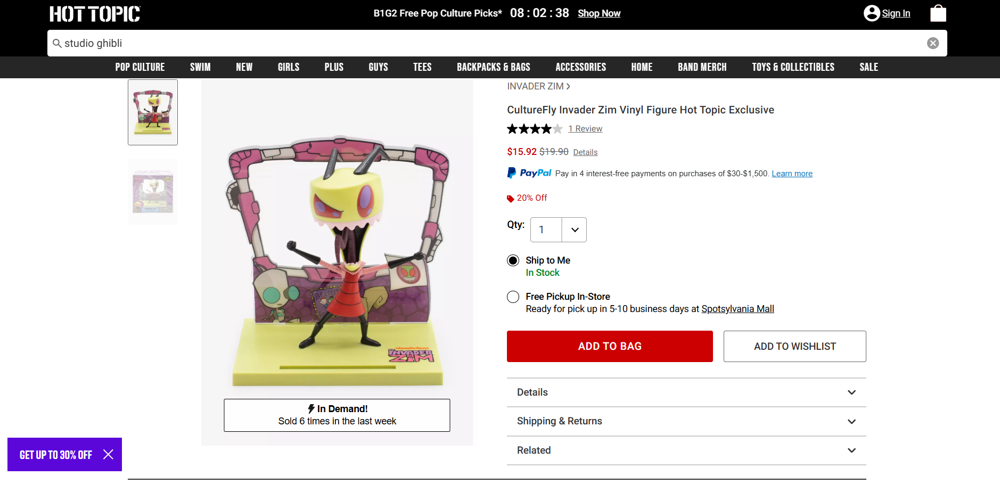

The SUS test is a test that measures the usability of a website. For the test, you must run five steps to perform on the website. Then, you rate the usability on a Liert scale. You do a bit of math with your ratings and then you get a number. I decided to choose the Hot Topic website for the usability test. Below are my results.

Time completed: 00:00:10. The first step was to find a band T-shirt. This step was found to be relatively easy since the website has a tab for band merch at the top.
Time completed: 00:00:20. This step was also relatively easy. The subject used the seach bar to find it. Though it was not as easy as finding the band tee.
Time completed: 00:00:23. This was slightly more difficult. The subject had to back out of the page they were in to find it. They had no trouble finding the local store.
Time completed: 00:00:17. The statement was located on the bottom of the page. There was a bit of confusion on what part of the bottom it was on, but it was able to be found.
Time completed: 00:00:28. Narrowing down the price was simple enough, but finding a figure was difficult. The subject was able to find one using the tabs though.Overall, the website was usable, but there would be a deal wheel spin pop-up every few minutes. Now that we've run the steps in the website, it's time to rate the usability on a Likert scale and do a bit of math.
Now it's your turn to try it! create your own 5-step process for a website and rate each question on a scale from 1 - 10 (1 being strongly disagree and 5 being strongly agree). When you're done, click "Calculate". Have fun!